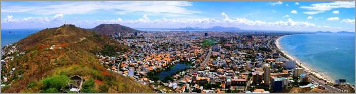
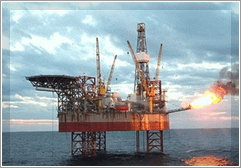

省の紹介
バリア・ブンタウ省はベトナムの東南部の沿岸地域で、西側にホーチミン市との16kmに渡る県境があります。北はドンナイ省に接し、東はビントゥン省に接し、南及び西南は東海に接する。約300kmの長さの海岸があります。平均温度が27℃で、台風は比較的少ない地域です。

人口：約100万人
自然面積: 1,989.5 km2 .
バリア・ブンタウ省はブンタウ市、バリア市、タンタン区、ロンデイン区、ダトドー区、スエンモク区、チャウダク 区、コンダオ島という８行政区域に分かれています。
バリア・ブンタウ省の人民委員会として今後の5年間の目標は「海運業を引き続き発展させ、2015年の初めには現代的な海港・工業都市になるよう努力する」となっております。石油からの収入に代わり、海港及び海運に関わるサービスからの収入を増やしていくという方針の実現に向かって進めております。
立地の利便性
バリア・ブンタウ省は東南部の東海への出入口であり20ｋｍの港湾部は海外への玄関口となります。現在、カイメップ・ティバイ港は130,000トンの貨物船が入港可能です。2015年着工予定のロンタン国際空港までの距離は30-70ｋｍでタンソンニット国際空港までは125ｋｍです。その カンボジアから続くXuyen A 道路の終着点であり、世界に向けたビジネスが可能です。
二次的にはバリア・ブンタウ省だけでなく、購買力が高い南部重点経済圏であるホーチミン市、Binh Duong省、Binh Phuoc省、Tay Ninh省、Long An省、Tien Giang省、Dong Nai省にある企業とのビジネスが可能です。また、省内のインフラシステムも整っており、海港のほかに空港、内陸水運網、他の省に接続する道路も整っています。
豊富な天然資源

バリア・ブンタウ省の特徴の一つは豊富な天然資源、特に石油・天然ガス・建材です。石油及び天然ガスについては省の沖合いが採掘の中心地であり、またガス火力発電により国内電力の中心的な役割を果たしています。 発電は全国の電量の40％をしめます。ですので、省にある企業の電力需要を安定に確保可能です。その上に、自然から恵まれた綺麗な海岸、砂丘、海に沿う山、特にBInh Chau - Phuoc Buu自然保護区、Con Dao国家自然保護区でバリア・ブンタウ省は国の有名な観光地となります。
快適な生活環境
バリア・ブンタウ省は複数の名所及び外国人に友好的なな住民気質により、外国人の方にとって最適な生活地域です。綺麗な空気・美しい海岸、山、賑やかなブンタウ市があって、ここは外国人にとって最高の生活環境です。他のアセアン諸国と比べてもベトナムの生活費は比較的安い方ですし、新鮮で様々なが食材が食べられるのできっとご満足いただけるかと思います。ホテル、レストラン、サービスアパートなど、観光者及び駐在者の住まいとしても十分な環境がございます。
トップの約束
バリア・ブンタウ省は省のトップによる、海外投資誘致に対して法律等を柔軟に活用して素早くかつ柔軟な対応をさせて頂くことを目指しており、海外投資家の皆様のバリア・ブンタウ省の進出メリットとなるかと思います。 2011年各省対象の競争能力指数調査結果では、バリア・ブンタウ省の指数は7.1となり、東南部の最大の指数でした。これはいかにトップが外国投資家を歓迎し、職員が投資家に積極的に支援しているかを表しております。
海港紹介
バリア・ブンタウ省は305.4ｋｍの海岸線で東南部の東海への玄関口です。そのため海港、造船、物流、漁業及び水産加工、レジャーなど海に関わる産業を発展していく大きな可能性を有しております。20km以上の海岸港を有し、Sao Mai Ben Dinh港,Cai Mep Thi Vai港は国の国際港と定められました。計画では52港があり、現在既に45,000,000トン/年の21港が稼働しており、主にCai Mep Thi Vaiエリアに集中しています。現在は最大で130,000トンの貨物船が入港可能です。バリア・ブンタウ省発ベトナムからヨーロッパとアメリカ直行船便により輸送時間が3-4日削減出来るようになりました。そのうえ、港湾エリアは高速道路や工業団地に近いため企業にとって利便性が高い地域です。
経済・社会状況
- - 一人当たりＧＤＰ：5,817ＵＳＤ/人(2012年）
- - 労働人口：約682,000人（2012年）
- - 主な産業：石油開拓、化学、製鉄、農林水産物の加工、建材製造、機械加工、金属加工など。
- - 将来の開発方針：バリア・ブンタウ省は2020年までに工業都市になることを目指しています。
- - 総面積が約8,401ha の14工業団地があり、総面積が約1,523haの29小規模工業団地があります。
- - 投資金額が約1,780億USDの325投資プロジェクトを誘致出来ました。その中で、外国投資は181件で、投資金額は約1,290億USDにのぼり、うち日本からの投資案件は18件で投資金額が約174億USDです。
勤勉な労働力の供給
省の労働年齢の総人口は約670,000人。バリア・ブンタウ省は人材教育・人材発展政策実施施策を計画しました。2012年－2020年に段階的に優先業種である機械、電気・電子、裾野産業に役立つ精密加工、機械製造などの業種への技術労働者を集中的に教育しています。
工業団地の発展、特に裾野産業の需要に従い、省にある職業訓練校の施設及び機材に投資しながら教育プログラム、教育内容も充実させる事に取り組んでおります。今後の日系企業の需要に合わせた、日本語が話せる1,000人の技術者の教育計画も実施しております。